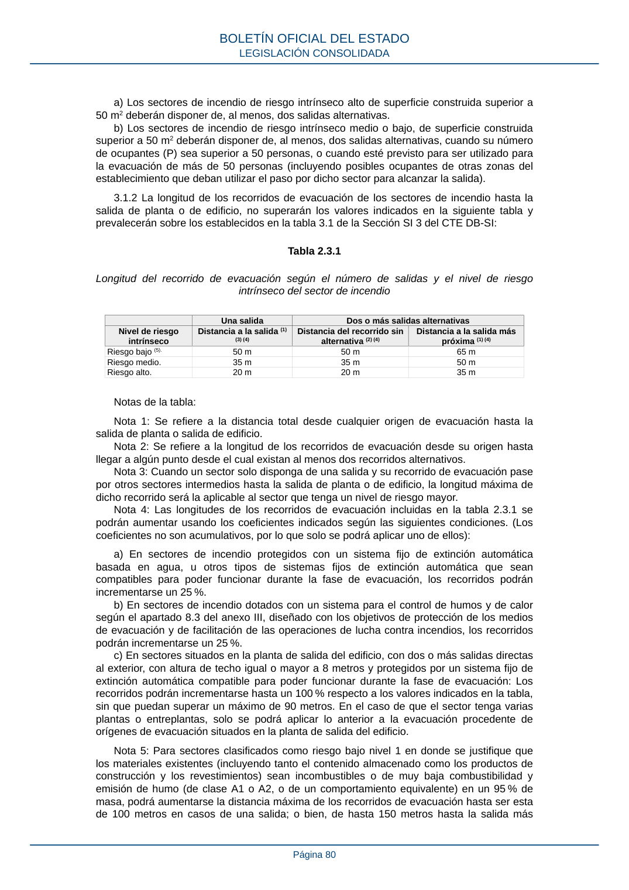

RSCIEI · Página 80 · versión 2025-04-10
SHA256: 85aa0af25d51e5b58d8975a4eefbf76d3f57a8933445cfe814ae9c4818a2e3e7 · página física 80 de 108 · métodos de encabezado
solo si están cotejados.
Formatos: Markdown · JSON de bloques · PDF p. 80 · imagen PNG
a) Los sectores de incendio de riesgo intrínseco alto de superficie construida superior a 50 m2 deberán disponer de, al menos, dos salidas alternativas. b) Los sectores de incendio de riesgo intrínseco medio o bajo, de superficie construida superior a 50 m2 deberán disponer de, al menos, dos salidas alternativas, cuando su número de ocupantes (P) sea superior a 50 personas, o cuando esté previsto para ser utilizado para la evacuación de más de 50 personas (incluyendo posibles ocupantes de otras zonas del establecimiento que deban utilizar el paso por dicho sector para alcanzar la salida). 3.1.2 La longitud de los recorridos de evacuación de los sectores de incendio hasta la salida de planta o de edificio, no superarán los valores indicados en la siguiente tabla y prevalecerán sobre los establecidos en la tabla 3.1 de la Sección SI 3 del CTE DB-SI: Tabla 2.3.1 Longitud del recorrido de evacuación según el número de salidas y el nivel de riesgo intrínseco del sector de incendio Una salida Dos o más salidas alternativas Nivel de riesgo intrínseco Distancia a la salida (1) (3) (4) Distancia del recorrido sin alternativa (2) (4) Distancia a la salida más próxima (1) (4) Riesgo bajo (5). 50 m 50 m 65 m Riesgo medio. 35 m 35 m 50 m Riesgo alto. 20 m 20 m 35 m Notas de la tabla: Nota 1: Se refiere a la distancia total desde cualquier origen de evacuación hasta la salida de planta o salida de edificio. Nota 2: Se refiere a la longitud de los recorridos de evacuación desde su origen hasta llegar a algún punto desde el cual existan al menos dos recorridos alternativos. Nota 3: Cuando un sector solo disponga de una salida y su recorrido de evacuación pase por otros sectores intermedios hasta la salida de planta o de edificio, la longitud máxima de dicho recorrido será la aplicable al sector que tenga un nivel de riesgo mayor. Nota 4: Las longitudes de los recorridos de evacuación incluidas en la tabla 2.3.1 se podrán aumentar usando los coeficientes indicados según las siguientes condiciones. (Los coeficientes no son acumulativos, por lo que solo se podrá aplicar uno de ellos): a) En sectores de incendio protegidos con un sistema fijo de extinción automática basada en agua, u otros tipos de sistemas fijos de extinción automática que sean compatibles para poder funcionar durante la fase de evacuación, los recorridos podrán incrementarse un 25 %. b) En sectores de incendio dotados con un sistema para el control de humos y de calor según el apartado 8.3 del anexo III, diseñado con los objetivos de protección de los medios de evacuación y de facilitación de las operaciones de lucha contra incendios, los recorridos podrán incrementarse un 25 %. c) En sectores situados en la planta de salida del edificio, con dos o más salidas directas al exterior, con altura de techo igual o mayor a 8 metros y protegidos por un sistema fijo de extinción automática compatible para poder funcionar durante la fase de evacuación: Los recorridos podrán incrementarse hasta un 100 % respecto a los valores indicados en la tabla, sin que puedan superar un máximo de 90 metros. En el caso de que el sector tenga varias plantas o entreplantas, solo se podrá aplicar lo anterior a la evacuación procedente de orígenes de evacuación situados en la planta de salida del edificio. Nota 5: Para sectores clasificados como riesgo bajo nivel 1 en donde se justifique que los materiales existentes (incluyendo tanto el contenido almacenado como los productos de construcción y los revestimientos) sean incombustibles o de muy baja combustibilidad y emisión de humo (de clase A1 o A2, o de un comportamiento equivalente) en un 95 % de masa, podrá aumentarse la distancia máxima de los recorridos de evacuación hasta ser esta de 100 metros en casos de una salida; o bien, de hasta 150 metros hasta la salida más BOLETÍN OFICIAL DEL ESTADO LEGISLACIÓN CONSOLIDADA Página 80
